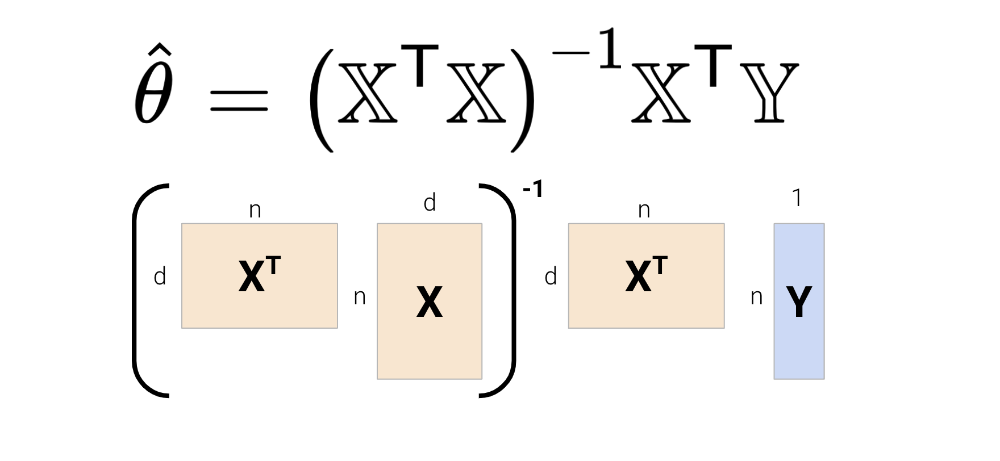
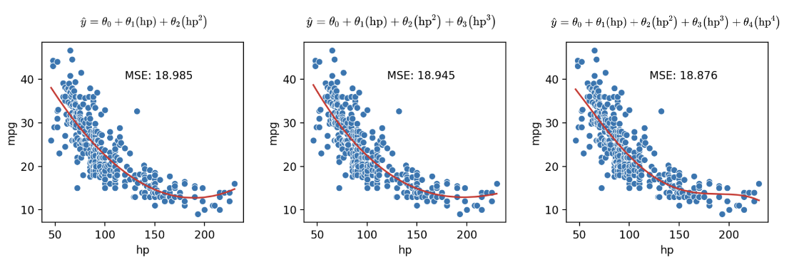

Recognize the value of feature engineering as a tool to improve model performance
Implement polynomial feature generation and one hot encoding
Understand the interactions between model complexity, model variance, and training error
At this point, we’ve grown quite familiar with the modeling process. We’ve introduced the concept of loss, used it to fit several types of models, and, most recently, extended our analysis to multiple regression. Along the way, we’ve forged our way through the mathematics of deriving the optimal model parameters in all its gory detail. It’s time to make our lives a little easier – let’s implement the modeling process in code!
In this lecture, we’ll explore two techniques for model fitting:
Translating our derived formulas for regression to python
Using python’s sklearn package
With our new programming frameworks in hand, we will also add sophistication to our models by introducing more complex features to enhance model performance.
14.1 Gradient Descent Cont.
Before we dive into feature engineering, let’s quickly review gradient descent, which we covered in the last lecture. Recall that gradient descent is a powerful technique for choosing the model parameters that minimize the loss function.
14.1.1 Gradient Descent Review
As we learned earlier, we set the derivative of the loss function to zero and solve to determine the optimal parameters \(\theta\) that minimize loss. For a loss surface in 2D (or higher), the best way to minimize loss is to “walk” down the loss surface until we reach our optimal parameters \(\vec{\theta}\). The gradient vector tells us which direction to “walk” in.
For example, the vector of parameter values \(\vec{\theta} = \begin{bmatrix} \theta_{0} \\ \theta_{1} \\ \end{bmatrix}\) gives us a two parameter model (d = 2). To calculate our gradient vector, we can take the partial derivative of loss with respect to each parameter: \(\frac{\partial L}{\partial \theta_0}\) and \(\frac{\partial L}{\partial \theta_1}\).
Its gradient vector would then be the 2D vector: \[\nabla_{\vec{\theta}} L = \begin{bmatrix} \frac{\partial L}{\partial \theta_0} \\ \frac{\partial L}{\partial \theta_1} \end{bmatrix}\]
Note that \(-\nabla_{\vec{\theta}} L\) always points in the downhill direction of the surface.
Recall that we also discussed the gradient descent update rule, where we nudge \(\theta\) in a negative gradient direction until \(\theta\) converges.
As a refresher, the rule is as follows: \[\vec{\theta}^{(t+1)} = \vec{\theta}^{(t)} - \alpha \nabla_{\vec{\theta}} L(\vec{\theta}^{(t)}) \]
\(\theta\) is a vector with our model weights
\(L\) is the loss function
\(\alpha\) is the learning rate
\(\vec{\theta}^{(t)}\) is the current value of \(\theta\)
\(\vec{\theta}^{(t+1)}\) is the next value of \(\theta\)
\(\nabla_{\vec{\theta}} L(\vec{\theta}^{(t)})\) is the gradient of the loss function evaluated at the current \(\theta\): \[\frac{1}{n}\sum_{i=1}^{n}\nabla_{\vec{\theta}} l(y_i, f_{\vec{\theta}^{(t)}}(X_i))\]
Let’s now walk through an example of calculating and updating the gradient vector. Say our model and loss are: \[\begin{align}
f_{\vec{\theta}}(\vec{x}) &= \vec{x}^T\vec{\theta} = \theta_0x_0 + \theta_1x_1
\\l(y, \hat{y}) &= (y - \hat{y})^2
\end{align}
\]
Plugging in \(f_{\vec{\theta}}(\vec{x})\) for \(\hat{y}\), our loss function becomes \(l(\vec{\theta}, \vec{x}, y_i) = (y_i - \theta_0x_0 - \theta_1x_1)^2\).
To calculate our gradient vector, we can start by computing the partial derivative of the loss function with respect to \(\theta_0\): \[\frac{\partial}{\partial \theta_{0}} l(\vec{\theta}, \vec{x}, y_i) = 2(y_i - \theta_0x_0 - \theta_1x_1)(-x_0)\]
Let’s now do the same but with respect to \(\theta_1\): \[\frac{\partial}{\partial \theta_{1}} l(\vec{\theta}, \vec{x}, y_i) = 2(y_i - \theta_0x_0 - \theta_1x_1)(-x_1)\]
Remember that we need to keep updating \(\theta\) until the algorithm converges to a solution and stops updating significantly (or at all). When updating \(\theta\), we’ll have a fixed number of updates and subsequent updates will be quite small (we won’t change \(\theta\) by much).
14.1.2 Stochastic (Mini-batch) Gradient Descent
Let’s now dive deeper into gradient and stochastic gradient descent. In the previous lecture, we discussed how finding the gradient across all the data is extremeley computationally taxing and takes a lot of resources to calculate.
We know that the solution to the normal equation is \(\hat{\theta} = (\mathbb{X}^T\mathbb{X})^{-1}\mathbb{X}^T\mathbb{Y}\). Let’s break this down and determine the computational complexity for this solution.

Let \(n\) be the number of samples (rows) and \(d\) be the number of features (columns).
Computing \((\mathbb{X}^{\top}\mathbb{X})\) takes \(O(nd^2)\) time, and it’s inverse takes another \(O(d^3)\) time to calculate; overall, \((\mathbb{X}^{\top}\mathbb{X})^{-1}\) takes \(O(nd^2) + O(d^3)\) time.
Multiplying \((\mathbb{X}^{\top}\mathbb{X})^{-1}\) and \(\mathbb{X}^{\top}\mathbb{Y}\) takes \(O(d^2)\) time.
In total, calculating the solution to the normal equation takes \(O(nd^2) + O(d^3) + O(nd) + O(d^2)\) time. We can see that \(O(nd^2) + O(d^3)\) dominates the complexity — this can be problematic for high-dimensional models and very large datasets.
On the other hand, the time complexity of a single gradient descent step takes only \(O(nd)\) time.
Suppose we run \(T\) iterations. The final complexity would then be \(O(Tnd)\). Typically, \(n\) is much larger than \(T\) and \(d\). How can we reduce the cost of this algorithm using a technique from Data 100? Do we really need to use \(n\) data points? We don’t! Instead, we can use stochastic gradient descent.
We know that our true gradient of \(\nabla_{\vec{\theta}} L (\vec{\theta^{(t)}}) = \frac{1}{n}\sum_{i=1}^{n}\nabla_{\vec{\theta}} l(y_i, f_{\vec{\theta}^{(t)}}(X_i))\) has a time complexity of \(O(nd)\). Instead of using all \(n\) samples to calculate the true gradient of the loss surface, let’s use a sample of our data to approximate. Say we sample \(b\) records (\(s_1, \cdots, s_b\)) from our \(n\) datapoints. Our new (stochastic) gradient descent function will be \(\nabla_{\vec{\theta}} L (\vec{\theta^{(t)}}) = \frac{1}{b}\sum_{i=1}^{b}\nabla_{\vec{\theta}} l(y_{s_i}, f_{\vec{\theta}^{(t)}}(X_{s_i}))\) and will now have a time complexity of \(O(bd)\), which is much faster!
Stochastic gradient descent helps us approximate the gradient while also reducing the time complexity and computational cost. The time complexity scales with the number of datapoints selected in the sample. To sample data, there are two approaches we can use:
Shuffle the data and select samples one at a time.
Take a simple random sample for each gradient computation.
But how do we decide our mini-batch size (\(b\)), or the number of datapoints in our sample? The original stochastic gradient descent algorithm uses \(b=1\) so that only one sample is used to approximate the gradient at a time. Although we don’t use such a small mini-batch size often, \(b\) typically is small. When choosing \(b\), there are several factors to consider: a larger batch size results in a better gradient estimate, parallelism, and other systems factors. On the other hand, a smaller batch size will be faster and have more frequent updates. It is up to data scientists to balance the tradeoff between batch size and time complexity.
Summarizing our two gradient descent techniques:
(Batch) Gradient Descent: Gradient descent computes the true descent and always descends towards the true minimum of the loss. While accurate, it can often be computationally expensive.
(Minibatch) Stochastic gradient descent: Stochastic gradient descent approximates the true gradient descent. It may not descend towards the true minimum with each update, but it’s often less computationally expensive than batch gradient descent.
14.2 Feature Engineering
At this point in the course, we’ve equipped ourselves with some powerful techniques to build and optimize models. We’ve explored how to develop models of multiple variables, as well as how to transform variables to help linearize a dataset and fit these models to maximize their performance.
All of this was done with one major caveat: the regression models we’ve worked with so far are all linear in the input variables. We’ve assumed that our predictions should be some combination of linear variables. While this works well in some cases, the real world isn’t always so straightforward. We’ll learn an important method to address this issue – feature engineering – and consider some new problems that can arise when we do so.
Feature engineering is the process of transforming raw features into more informative features that can be used in modeling or EDA tasks and improve model performance.
Feature engineering allows you to:
Capture domain knowledge
Express non-linear relationships using linear models
Use non-numeric (qualitative) features in models
14.3 Feature Functions
A feature function describes the transformations we apply to raw features in a dataset to create a design matrix of transformed features. We typically denote the feature function as \(\Phi\) (the Greek letter “phi” that we use to represent the true function). When we apply the feature function to our original dataset \(\mathbb{X}\), the result, \(\Phi(\mathbb{X})\), is a transformed design matrix ready to be used in modeling.
For example, we might design a feature function that computes the square of an existing feature and adds it to the design matrix. In this case, our existing matrix \([x]\) is transformed to \([x, x^2]\). Its dimension increases from 1 to 2. Often, the dimension of the featurized dataset increases as seen here.
The new features introduced by the feature function can then be used in modeling. Often, we use the symbol \(\phi_i\) to represent transformed features after feature engineering.
In matrix notation, the symbol \(\Phi\) is sometimes used to denote the design matrix after feature engineering has been performed. Note that in the usage below, \(\Phi\) is now a feature-engineered matrix, rather than a function.
\[\hat{\mathbb{Y}} = \Phi \theta\]
More formally, we describe a feature function as transforming the original \(\mathbb{R}^{n \times p}\) dataset \(\mathbb{X}\) to a featurized \(\mathbb{R}^{n \times p'}\) dataset \(\mathbb{\Phi}\), where \(p'\) is typically greater than \(p\).
Feature engineering opens up a whole new set of possibilities for designing better-performing models. As you will see in lab and homework, feature engineering is one of the most important parts of the entire modeling process.
A particularly powerful use of feature engineering is to allow us to perform regression on non-numeric features. One hot encoding is a feature engineering technique that generates numeric features from categorical data, allowing us to use our usual methods to fit a regression model on the data.
To illustrate how this works, we’ll refer back to the tips dataset from previous lectures. Consider the "day" column of the dataset:
Code
import numpy as npimport seaborn as snsimport pandas as pdimport sklearn.linear_model as lmtips = sns.load_dataset("tips")tips.head()
total_bill
tip
sex
smoker
day
time
size
0
16.99
1.01
Female
No
Sun
Dinner
2
1
10.34
1.66
Male
No
Sun
Dinner
3
2
21.01
3.50
Male
No
Sun
Dinner
3
3
23.68
3.31
Male
No
Sun
Dinner
2
4
24.59
3.61
Female
No
Sun
Dinner
4
At first glance, it doesn’t seem possible to fit a regression model to this data – we can’t directly perform any mathematical operations on the entry “Sun”.
To resolve this, we instead create a new table with a feature for each unique value in the original "day" column. We then iterate through the "day" column. For each entry in "day" we fill the corresponding feature in the new table with 1. All other features are set to 0.
In short, each category of a categorical variable gets its own feature
Value = 1 if a row belongs to the category
Value = 0 otherwise
The OneHotEncoder class of sklearn (documentation) offers a quick way to perform this one-hot encoding. You will explore its use in detail in the lab. For now, recognize that we follow a very similar workflow to when we were working with the LinearRegression class: we initialize a OneHotEncoder object, fit it to our data, and finally use .transform to apply the fitted encoder.
from sklearn.preprocessing import OneHotEncoder# Initialize a OneHotEncoder objectohe = OneHotEncoder()# Fit the encoderohe.fit(tips[["day"]])# Use the encoder to transform the raw "day" featureencoded_day = ohe.transform(tips[["day"]]).toarray()encoded_day_df = pd.DataFrame(encoded_day, columns=ohe.get_feature_names_out())encoded_day_df.head()
day_Fri
day_Sat
day_Sun
day_Thur
0
0.0
0.0
1.0
0.0
1
0.0
0.0
1.0
0.0
2
0.0
0.0
1.0
0.0
3
0.0
0.0
1.0
0.0
4
0.0
0.0
1.0
0.0
The one-hot encoded features can then be used in the design matrix to train a model:
Now, the day feature (or rather, the four new boolean features that represent day) can be used to fit a model.
Using sklearn to fit the new model, we can determine the model coefficients, allowing us to understand how each feature impacts the predicted tip.
from sklearn.linear_model import LinearRegressiondata_w_ohe = tips[["total_bill", "size", "day"]].join(encoded_day_df).drop(columns ="day")ohe_model = lm.LinearRegression(fit_intercept=False) #Tell sklearn to not add an additional bias column. Why?ohe_model.fit(data_w_ohe, tips["tip"])pd.DataFrame({"Feature":data_w_ohe.columns, "Model Coefficient":ohe_model.coef_})
Feature
Model Coefficient
0
total_bill
0.092994
1
size
0.187132
2
day_Fri
0.745787
3
day_Sat
0.621129
4
day_Sun
0.732289
5
day_Thur
0.668294
For example, when looking at the coefficient for day_Fri, we can now understand the impact of it being Friday on the predicted tip — if it is a Friday, the predicted tip increases by approximately $0.75.
When one-hot encoding, keep in mind that any set of one-hot encoded columns will always sum to a column of all ones, representing the bias column. More formally, the bias column is a linear combination of the OHE columns.
We must be careful not to include this bias column in our design matrix. Otherwise, there will be linear dependence in the model, meaning \(\mathbb{X}^{\top}\mathbb{X}\) would no longer be invertible, and our OLS estimate \(\hat{\theta} = (\mathbb{X}^{\top}\mathbb{X})^{-1}\mathbb{X}^{\top}\mathbb{Y}\) fails.
To resolve this issue, we simply omit one of the one-hot encoded columns or do not include an intercept term. The adjusted design matrices are shown below.
Either approach works — we still retain the same information as the omitted column being a linear combination of the remaining columns.
14.5 Polynomial Features
We have encountered a few cases now where models with linear features have performed poorly on datasets that show clear non-linear curvature.
As an example, consider the vehicles dataset, which contains information about cars. Suppose we want to use the hp (horsepower) of a car to predict its "mpg" (gas mileage in miles per gallon). If we visualize the relationship between these two variables, we see a non-linear curvature. Fitting a linear model to these variables results in a high (poor) value of RMSE.
\[\hat{y} = \theta_0 + \theta_1 (\text{hp})\]
Code
pd.options.mode.chained_assignment =Nonevehicles = sns.load_dataset("mpg").dropna().rename(columns = {"horsepower": "hp"}).sort_values("hp")X = vehicles[["hp"]]Y = vehicles["mpg"]hp_model = lm.LinearRegression()hp_model.fit(X, Y)hp_model_predictions = hp_model.predict(X)import matplotlib.pyplot as pltsns.scatterplot(data=vehicles, x="hp", y="mpg")plt.plot(vehicles["hp"], hp_model_predictions, c="tab:red");print(f"MSE of model with (hp) feature: {np.mean((Y-hp_model_predictions)**2)}")
MSE of model with (hp) feature: 23.943662938603108
As we can see from the plot, the data follows a curved line rather than a straight one. To capture this non-linearity, we can incorporate non-linear features. Let’s introduce a polynomial term, \(\text{hp}^2\), into our regression model. The model now takes the form:
How can we fit a model with non-linear features? We can use the exact same techniques as before: ordinary least squares, gradient descent, or sklearn. This is because our new model is still a linear model. Although it contains non-linear features, it is linear with respect to the model parameters. All of our previous work on fitting models was done under the assumption that we were working with linear models. Because our new model is still linear, we can apply our existing methods to determine the optimal parameters.
# Add a hp^2 feature to the design matrixX = vehicles[["hp"]]X["hp^2"] = vehicles["hp"]**2# Use sklearn to fit the modelhp2_model = lm.LinearRegression()hp2_model.fit(X, Y)hp2_model_predictions = hp2_model.predict(X)sns.scatterplot(data=vehicles, x="hp", y="mpg")plt.plot(vehicles["hp"], hp2_model_predictions, c="tab:red");print(f"MSE of model with (hp^2) feature: {np.mean((Y-hp2_model_predictions)**2)}")
MSE of model with (hp^2) feature: 18.984768907617223
Looking a lot better! By incorporating a squared feature, we are able to capture the curvature of the dataset. Our model is now a parabola centered on our data. Notice that our new model’s error has decreased relative to the original model with linear features.
14.6 Complexity and Overfitting
We’ve seen now that feature engineering allows us to build all sorts of features to improve the performance of the model. In particular, we saw that designing a more complex feature (squaring hp in the vehicles data previously) substantially improved the model’s ability to capture non-linear relationships. To take full advantage of this, we might be inclined to design increasingly complex features. Consider the following three models, each of different order (the maximum exponent power of each model):
Model with order 2: \(\hat{y} = \theta_0 + \theta_1 (\text{hp}) + \theta_2 (\text{hp}^2)\)
Model with order 3: \(\hat{y} = \theta_0 + \theta_1 (\text{hp}) + \theta_2 (\text{hp}^2) + \theta_3 (\text{hp}^3)\)
Model with order 4: \(\hat{y} = \theta_0 + \theta_1 (\text{hp}) + \theta_2 (\text{hp}^2) + \theta_3 (\text{hp}^3) + \theta_4 (\text{hp}^4)\)

As we can see in the plots above, MSE continues to decrease with each additional polynomial term. To visualize it further, let’s plot models as the complexity increases from 0 to 7:
When we use our model to make predictions on the same data that was used to fit the model, we find that the MSE decreases with each additional polynomial term (as our model gets more complex). The training error is the model’s error when generating predictions from the same data that was used for training purposes. We can conclude that the training error goes down as the complexity of the model increases.
This seems like good news – when working on the training data, we can improve model performance by designing increasingly complex models.
Math Fact: Polynomial Degrees
Given \(N\) overlapping data points, we can always find a polynomial of degree \(N-1\) that goes through all those points.
For example, there always exists a degree-4 polynomial curve that can perfectly model a dataset of 5 datapoints:
However, high model complexity comes with its own set of issues. When building the vehicles models above, we trained the models on the entire dataset and then evaluated their performance on this same dataset. In reality, we are likely to instead train the model on a sample from the population, then use it to make predictions on data it didn’t encounter during training.
Let’s walk through a more realistic example. Say we are given a training dataset of just 6 datapoints and want to train a model to then make predictions on a different set of points. We may be tempted to make a highly complex model (e.g., degree 5), especially given it makes perfect predictions on the training data as clear on the left. However, as shown in the graph on the right, this model would perform horribly on the rest of the population!
This phenomenon called overfitting. The model effectively just memorized the training data it encountered when it was fitted, leaving it unable to generalize well to data it didn’t encounter during training. This is a problem: we want models that are generalizable to “unseen” data.
Additionally, since complex models are sensitive to the specific dataset used to train them, they have high variance. A model with high variance tends to vary more dramatically when trained on different datasets. Going back to our example above, we can see our degree-5 model varies erratically when we fit it to different samples of 6 points from vehicles.
We now face a dilemma: we know that we can decrease training error by increasing model complexity, but models that are too complex start to overfit and can’t be reapplied to new datasets due to high variance.
We can see that there is a clear trade-off that comes from the complexity of our model. As model complexity increases, the model’s error on the training data decreases. At the same time, the model’s variance tends to increase.
The takeaway here: we need to strike a balance in the complexity of our models; we want models that are generalizable to “unseen” data. A model that is too simple won’t be able to capture the key relationships between our variables of interest; a model that is too complex runs the risk of overfitting.
This begs the question: how do we control the complexity of a model? Stay tuned for Lecture 17 on Cross-Validation and Regularization!
14.7 [Bonus] Stochastic Gradient Descent in PyTorch
While this material is out of scope for Data 100, it is useful if you plan to enter a career in data science!
In practice, you will use software packages such as PyTorch when computing gradients and implementing gradient descent. You’ll often follow three main steps:
Sample a batch of the data.
Compute the loss and the gradient.
Update your gradient until you reach an appropriate estimate of the true gradient.
---title: Feature Engineeringexecute: echo: true warning: falseformat: html: code-fold: false code-tools: true toc: true toc-title: Feature Engineering page-layout: full theme: - cosmo - cerulean callout-icon: falsejupyter: jupytext: text_representation: extension: .qmd format_name: quarto format_version: '1.0' jupytext_version: 1.16.1 kernelspec: display_name: Python 3 (ipykernel) language: python name: python3---::: {.callout-note collapse="false"}## Learning Outcomes* Recognize the value of feature engineering as a tool to improve model performance* Implement polynomial feature generation and one hot encoding* Understand the interactions between model complexity, model variance, and training error:::At this point, we've grown quite familiar with the modeling process. We've introduced the concept of loss, used it to fit several types of models, and, most recently, extended our analysis to multiple regression. Along the way, we've forged our way through the mathematics of deriving the optimal model parameters in all its gory detail. It's time to make our lives a little easier – let's implement the modeling process in code!In this lecture, we'll explore two techniques for model fitting:1. Translating our derived formulas for regression to `python`2. Using `python`'s `sklearn` packageWith our new programming frameworks in hand, we will also add sophistication to our models by introducing more complex features to enhance model performance. ## Gradient Descent Cont.Before we dive into feature engineering, let's quickly review gradient descent, which we covered in the last lecture. Recall that gradient descent is a powerful technique for choosing the model parameters that minimize the loss function. ### Gradient Descent ReviewAs we learned earlier, we set the derivative of the loss function to zero and solve to determine the optimal parameters $\theta$ that minimize loss. For a loss surface in 2D (or higher), the best way to minimize loss is to "walk" down the loss surface until we reach our optimal parameters $\vec{\theta}$. The **gradient vector** tells us which direction to "walk" in.For example, the *vector* of parameter values $\vec{\theta} = \begin{bmatrix} \theta_{0} \\ \theta_{1} \\ \end{bmatrix}$ gives us a two parameter model (d = 2). To calculate our gradient vector, we can take the *partial derivative* of loss with respect to each parameter: $\frac{\partial L}{\partial \theta_0}$ and $\frac{\partial L}{\partial \theta_1}$. Its **gradient vector** would then be the 2D vector: $$\nabla_{\vec{\theta}} L = \begin{bmatrix} \frac{\partial L}{\partial \theta_0} \\ \frac{\partial L}{\partial \theta_1} \end{bmatrix}$$Note that $-\nabla_{\vec{\theta}} L$ always points in the **downhill direction** of the surface. Recall that we also discussed the gradient descent update rule, where we nudge $\theta$ in a negative gradient direction until $\theta$ converges. As a refresher, the rule is as follows: $$\vec{\theta}^{(t+1)} = \vec{\theta}^{(t)} - \alpha \nabla_{\vec{\theta}} L(\vec{\theta}^{(t)}) $$ * $\theta$ is a vector with our model weights * $L$ is the loss function * $\alpha$ is the learning rate * $\vec{\theta}^{(t)}$ is the current value of $\theta$ * $\vec{\theta}^{(t+1)}$ is the next value of $\theta$ * $\nabla_{\vec{\theta}} L(\vec{\theta}^{(t)})$ is the gradient of the loss function evaluated at the current $\theta$: $$\frac{1}{n}\sum_{i=1}^{n}\nabla_{\vec{\theta}} l(y_i, f_{\vec{\theta}^{(t)}}(X_i))$$Let's now walk through an example of calculating and updating the gradient vector. Say our model and loss are:$$\begin{align}f_{\vec{\theta}}(\vec{x}) &= \vec{x}^T\vec{\theta} = \theta_0x_0 + \theta_1x_1\\l(y, \hat{y}) &= (y - \hat{y})^2\end{align}$$Plugging in $f_{\vec{\theta}}(\vec{x})$ for $\hat{y}$, our loss function becomes $l(\vec{\theta}, \vec{x}, y_i) = (y_i - \theta_0x_0 - \theta_1x_1)^2$.To calculate our gradient vector, we can start by computing the partial derivative of the loss function with respect to $\theta_0$: $$\frac{\partial}{\partial \theta_{0}} l(\vec{\theta}, \vec{x}, y_i) = 2(y_i - \theta_0x_0 - \theta_1x_1)(-x_0)$$Let's now do the same but with respect to $\theta_1$: $$\frac{\partial}{\partial \theta_{1}} l(\vec{\theta}, \vec{x}, y_i) = 2(y_i - \theta_0x_0 - \theta_1x_1)(-x_1)$$Putting this together, our gradient vector is: $$\nabla_{\theta} l(\vec{\theta}, \vec{x}, y_i) = \begin{bmatrix} -2(y_i - \theta_0x_0 - \theta_1x_1)(x_0) \\ -2(y_i - \theta_0x_0 - \theta_1x_1)(x_1) \end{bmatrix}$$Remember that we need to keep updating $\theta$ until the algorithm **converges** to a solution and stops updating significantly (or at all). When updating $\theta$, we'll have a fixed number of updates and subsequent updates will be quite small (we won't change $\theta$ by much).### Stochastic (Mini-batch) Gradient DescentLet's now dive deeper into gradient and stochastic gradient descent. In the previous lecture, we discussed how finding the gradient across all the data is extremeley computationally taxing and takes a lot of resources to calculate.We know that the solution to the normal equation is $\hat{\theta} = (\mathbb{X}^T\mathbb{X})^{-1}\mathbb{X}^T\mathbb{Y}$. Let's break this down and determine the computational complexity for this solution.<center><imgsrc="images/complexity_normal_solution.png"alt='complexity_normal_solution'width='600'></center> Let $n$ be the number of samples (rows) and $d$ be the number of features (columns). * Computing $(\mathbb{X}^{\top}\mathbb{X})$ takes $O(nd^2)$ time, and it's inverse takes another $O(d^3)$ time to calculate; overall, $(\mathbb{X}^{\top}\mathbb{X})^{-1}$ takes $O(nd^2) + O(d^3)$ time. * $\mathbb{X}^{\top}\mathbb{Y}$ takes $O(nd)$ time. * Multiplying $(\mathbb{X}^{\top}\mathbb{X})^{-1}$ and $\mathbb{X}^{\top}\mathbb{Y}$ takes $O(d^2)$ time. In total, calculating the solution to the normal equation takes $O(nd^2) + O(d^3) + O(nd) + O(d^2)$ time. We can see that $O(nd^2) + O(d^3)$ dominates the complexity — this can be problematic for high-dimensional models and very large datasets.On the other hand, the time complexity of a single gradient descent step takes only $O(nd)$ time. <center><imgsrc="images/complexity_grad_descent.png"alt='complexity_grad_descent'width='600'></center>Suppose we run $T$ iterations. The final complexity would then be $O(Tnd)$. Typically, $n$ is much larger than $T$ and $d$. How can we reduce the cost of this algorithm using a technique from Data 100? Do we really need to use $n$ data points? We don't! Instead, we can use stochastic gradient descent.We know that our true gradient of $\nabla_{\vec{\theta}} L (\vec{\theta^{(t)}}) = \frac{1}{n}\sum_{i=1}^{n}\nabla_{\vec{\theta}} l(y_i, f_{\vec{\theta}^{(t)}}(X_i))$ has a time complexity of $O(nd)$. Instead of using all $n$ samples to calculate the true gradient of the loss surface, let's use a sample of our data to approximate. Say we sample $b$ records ($s_1, \cdots, s_b$) from our $n$ datapoints. Our new (stochastic) gradient descent function will be $\nabla_{\vec{\theta}} L (\vec{\theta^{(t)}}) = \frac{1}{b}\sum_{i=1}^{b}\nabla_{\vec{\theta}} l(y_{s_i}, f_{\vec{\theta}^{(t)}}(X_{s_i}))$ and will now have a time complexity of $O(bd)$, which is much faster! Stochastic gradient descent helps us approximate the gradient while also reducing the time complexity and computational cost. The time complexity scales with the number of datapoints selected in the sample. To sample data, there are two approaches we can use:1. Shuffle the data and select samples one at a time.2. Take a simple random sample for each gradient computation.But how do we decide our mini-batch size ($b$), or the number of datapoints in our sample? The original stochastic gradient descent algorithm uses $b=1$ so that only one sample is used to approximate the gradient at a time. Although we don't use such a small mini-batch size often, $b$ typically is small. When choosing $b$, there are several factors to consider: a larger batch size results in a better gradient estimate, parallelism, and other systems factors. On the other hand, a smaller batch size will be faster and have more frequent updates. It is up to data scientists to balance the tradeoff between batch size and time complexity.Summarizing our two gradient descent techniques:- **(Batch) Gradient Descent**: Gradient descent computes the **true** descent and always descends towards the true minimum of the loss. While accurate, it can often be computationally expensive.<center><imgsrc="images/gd.png"alt='batch_grad_descent'width='300'></center>- **(Minibatch) Stochastic gradient descent**: Stochastic gradient descent **approximates** the true gradient descent. It may not descend towards the true minimum with each update, but it's often less computationally expensive than batch gradient descent.<center><imgsrc="images/sgd.png"alt='stochastic_grad_descent'width='300'></center>## Feature EngineeringAt this point in the course, we've equipped ourselves with some powerful techniques to build and optimize models. We've explored how to develop models of multiple variables, as well as how to transform variables to help **linearize** a dataset and fit these models to maximize their performance.All of this was done with one major caveat: the regression models we've worked with so far are all **linear in the input variables**. We've assumed that our predictions should be some combination of linear variables. While this works well in some cases, the real world isn't always so straightforward. We'll learn an important method to address this issue – feature engineering – and consider some new problems that can arise when we do so.Feature engineering is the process of *transforming* raw features into *more informative features* that can be used in modeling or EDA tasks and improve model performance.Feature engineering allows you to:* Capture domain knowledge * Express non-linear relationships using linear models* Use non-numeric (qualitative) features in models## Feature FunctionsA **feature function** describes the transformations we apply to raw features in a dataset to create a design matrix of transformed features. We typically denote the feature function as $\Phi$ (the Greek letter "phi" that we use to represent the true function). When we apply the feature function to our original dataset $\mathbb{X}$, the result, $\Phi(\mathbb{X})$, is a transformed design matrix ready to be used in modeling. For example, we might design a feature function that computes the square of an existing feature and adds it to the design matrix. In this case, our existing matrix $[x]$ is transformed to $[x, x^2]$. Its *dimension* increases from 1 to 2. Often, the dimension of the *featurized* dataset increases as seen here.<center><imgsrc="images/phi.png"alt='phi'width='700'></center>The new features introduced by the feature function can then be used in modeling. Often, we use the symbol $\phi_i$ to represent transformed features after feature engineering. $$\begin{align}\hat{y} &= \theta_0 + \theta_1 x + \theta_2 x^2 \\\hat{y} &= \theta_0 + \theta_1 \phi_1 + \theta_2 \phi_2\end{align}$$In matrix notation, the symbol $\Phi$ is sometimes used to denote the design matrix after feature engineering has been performed. Note that in the usage below, $\Phi$ is now a feature-engineered matrix, rather than a function.$$\hat{\mathbb{Y}} = \Phi \theta$$More formally, we describe a feature function as transforming the original $\mathbb{R}^{n \times p}$ dataset $\mathbb{X}$ to a featurized $\mathbb{R}^{n \times p'}$ dataset $\mathbb{\Phi}$, where $p'$ is typically greater than $p$. $$\mathbb{X} \in \mathbb{R}^{n \times p} \longrightarrow \Phi \in \mathbb{R}^{n \times p'}$$## One Hot EncodingFeature engineering opens up a whole new set of possibilities for designing better-performing models. As you will see in lab and homework, feature engineering is one of the most important parts of the entire modeling process.A particularly powerful use of feature engineering is to allow us to perform regression on *non-numeric* features. **One hot encoding** is a feature engineering technique that generates numeric features from categorical data, allowing us to use our usual methods to fit a regression model on the data. To illustrate how this works, we'll refer back to the `tips` dataset from previous lectures. Consider the `"day"` column of the dataset:```{python}#| code-fold: true#| vscode: {languageId: python}import numpy as npimport seaborn as snsimport pandas as pdimport sklearn.linear_model as lmtips = sns.load_dataset("tips")tips.head()``` At first glance, it doesn't seem possible to fit a regression model to this data – we can't directly perform any mathematical operations on the entry "Sun". To resolve this, we instead create a new table with a feature for each unique value in the original `"day"` column. We then iterate through the `"day"` column. For each entry in `"day"` we fill the corresponding feature in the new table with 1. All other features are set to 0.<center><imgsrc="images/ohe.png"alt='ohe'width='600'></center><br>In short, each category of a categorical variable gets its own feature<ul><li> Value = 1 if a row belongs to the category</li><li> Value = 0 otherwise</li></ul>The `OneHotEncoder` class of `sklearn` ([documentation](https://scikit-learn.org/stable/modules/generated/sklearn.preprocessing.OneHotEncoder.html#sklearn.preprocessing.OneHotEncoder.get_feature_names_out)) offers a quick way to perform this one-hot encoding. You will explore its use in detail in the lab. For now, recognize that we follow a very similar workflow to when we were working with the `LinearRegression` class: we initialize a `OneHotEncoder` object, fit it to our data, and finally use `.transform` to apply the fitted encoder.```{python}#| code-fold: false#| vscode: {languageId: python}from sklearn.preprocessing import OneHotEncoder# Initialize a OneHotEncoder objectohe = OneHotEncoder()# Fit the encoderohe.fit(tips[["day"]])# Use the encoder to transform the raw "day" featureencoded_day = ohe.transform(tips[["day"]]).toarray()encoded_day_df = pd.DataFrame(encoded_day, columns=ohe.get_feature_names_out())encoded_day_df.head()```The one-hot encoded features can then be used in the design matrix to train a model:<center><imgsrc="images/ohemodel.png"alt='ohemodel'width='600'></center>$$\hat{y} = \theta_1 (\text{total}\_\text{bill}) + \theta_2 (\text{size}) + \theta_3 (\text{day}\_\text{Fri}) + \theta_4 (\text{day}\_\text{Sat}) + \theta_5 (\text{day}\_\text{Sun}) + \theta_6 (\text{day}\_\text{Thur})$$Or in shorthand:$$\hat{y} = \theta_{1}\phi_{1} + \theta_{2}\phi_{2} + \theta_{3}\phi_{3} + \theta_{4}\phi_{4} + \theta_{5}\phi_{5} + \theta_{6}\phi_{6}$$Now, the `day` feature (or rather, the four new boolean features that represent day) can be used to fit a model.Using `sklearn` to fit the new model, we can determine the model coefficients, allowing us to understand how each feature impacts the predicted tip.```{python}#| vscode: {languageId: python}from sklearn.linear_model import LinearRegressiondata_w_ohe = tips[["total_bill", "size", "day"]].join(encoded_day_df).drop(columns ="day")ohe_model = lm.LinearRegression(fit_intercept=False) #Tell sklearn to not add an additional bias column. Why?ohe_model.fit(data_w_ohe, tips["tip"])pd.DataFrame({"Feature":data_w_ohe.columns, "Model Coefficient":ohe_model.coef_})```For example, when looking at the coefficient for `day_Fri`, we can now understand the impact of it being Friday on the predicted tip — if it is a Friday, the predicted tip increases by approximately $0.75.When one-hot encoding, keep in mind that any set of one-hot encoded columns will always sum to a column of all ones, representing the bias column. More formally, the bias column is a linear combination of the OHE columns.<center><imgsrc="images/bias.png"alt='bias'width='600'></center>We must be careful not to include this bias column in our design matrix. Otherwise, there will be linear dependence in the model, meaning $\mathbb{X}^{\top}\mathbb{X}$ would no longer be invertible, and our OLS estimate $\hat{\theta} = (\mathbb{X}^{\top}\mathbb{X})^{-1}\mathbb{X}^{\top}\mathbb{Y}$ fails.To resolve this issue, we simply omit one of the one-hot encoded columns *or* do not include an intercept term. The adjusted design matrices are shown below.<center><imgsrc="images/remove.png"alt='remove'width='600'></center>Either approach works — we still retain the same information as the omitted column being a linear combination of the remaining columns.## Polynomial FeaturesWe have encountered a few cases now where models with linear features have performed poorly on datasets that show clear non-linear curvature. As an example, consider the `vehicles` dataset, which contains information about cars. Suppose we want to use the `hp` (horsepower) of a car to predict its `"mpg"` (gas mileage in miles per gallon). If we visualize the relationship between these two variables, we see a non-linear curvature. Fitting a linear model to these variables results in a high (poor) value of RMSE. $$\hat{y} = \theta_0 + \theta_1 (\text{hp})$$```{python}#| code-fold: true#| vscode: {languageId: python}pd.options.mode.chained_assignment =Nonevehicles = sns.load_dataset("mpg").dropna().rename(columns = {"horsepower": "hp"}).sort_values("hp")X = vehicles[["hp"]]Y = vehicles["mpg"]hp_model = lm.LinearRegression()hp_model.fit(X, Y)hp_model_predictions = hp_model.predict(X)import matplotlib.pyplot as pltsns.scatterplot(data=vehicles, x="hp", y="mpg")plt.plot(vehicles["hp"], hp_model_predictions, c="tab:red");print(f"MSE of model with (hp) feature: {np.mean((Y-hp_model_predictions)**2)}")```As we can see from the plot, the data follows a curved line rather than a straight one. To capture this non-linearity, we can incorporate **non-linear** features. Let's introduce a **polynomial** term, $\text{hp}^2$, into our regression model. The model now takes the form:$$\hat{y} = \theta_0 + \theta_1 (\text{hp}) + \theta_2 (\text{hp}^2)$$$$\hat{y} = \theta_0 + \theta_1 \phi_1 + \theta_2 \phi_2$$How can we fit a model with non-linear features? We can use the exact same techniques as before: ordinary least squares, gradient descent, or `sklearn`. This is because our new model is still a **linear model**. Although it contains non-linear *features*, it is linear with respect to the model *parameters*. All of our previous work on fitting models was done under the assumption that we were working with linear models. Because our new model is still linear, we can apply our existing methods to determine the optimal parameters. ```{python}#| vscode: {languageId: python}# Add a hp^2 feature to the design matrixX = vehicles[["hp"]]X["hp^2"] = vehicles["hp"]**2# Use sklearn to fit the modelhp2_model = lm.LinearRegression()hp2_model.fit(X, Y)hp2_model_predictions = hp2_model.predict(X)sns.scatterplot(data=vehicles, x="hp", y="mpg")plt.plot(vehicles["hp"], hp2_model_predictions, c="tab:red");print(f"MSE of model with (hp^2) feature: {np.mean((Y-hp2_model_predictions)**2)}")```Looking a lot better! By incorporating a squared feature, we are able to capture the curvature of the dataset. Our model is now a parabola centered on our data. Notice that our new model's error has decreased relative to the original model with linear features.## Complexity and OverfittingWe've seen now that feature engineering allows us to build all sorts of features to improve the performance of the model. In particular, we saw that designing a more complex feature (squaring `hp` in the `vehicles` data previously) substantially improved the model's ability to capture non-linear relationships. To take full advantage of this, we might be inclined to design increasingly complex features. Consider the following three models, each of different order (the maximum exponent power of each model):* Model with order 2: $\hat{y} = \theta_0 + \theta_1 (\text{hp}) + \theta_2 (\text{hp}^2)$* Model with order 3: $\hat{y} = \theta_0 + \theta_1 (\text{hp}) + \theta_2 (\text{hp}^2) + \theta_3 (\text{hp}^3)$* Model with order 4: $\hat{y} = \theta_0 + \theta_1 (\text{hp}) + \theta_2 (\text{hp}^2) + \theta_3 (\text{hp}^3) + \theta_4 (\text{hp}^4)$<center><imgsrc="images/degree_comparison.png"alt='degree_comparison'width='900'></center>As we can see in the plots above, MSE continues to decrease with each additional polynomial term. To visualize it further, let's plot models as the complexity increases from 0 to 7: <center><imgsrc="images/degree_comparison2.png"alt='degree_comparison'width='850'></center>When we use our model to make predictions on the same data that was used to fit the model, we find that the MSE decreases with each additional polynomial term (as our model gets more complex). The **training error** is the model's error when generating predictions from the same data that was used for training purposes. We can conclude that the training error goes down as the complexity of the model increases. <center><imgsrc="images/train_error.png"alt='train_error'width='400'></center>This seems like good news – when working on the **training data**, we can improve model performance by designing increasingly complex models. ::: {.callout-tip}## Math Fact: Polynomial DegreesGiven $N$ overlapping data points, we can always find a polynomial of degree $N-1$ that goes through all those points.For example, there always exists a degree-4 polynomial curve that can perfectly model a dataset of 5 datapoints:<center><imgsrc="images/perfect_poly_fits.png"alt='train_error'width='600'></center>:::However, high model complexity comes with its own set of issues. When building the `vehicles` models above, we trained the models on the *entire* dataset and then evaluated their performance on this same dataset. In reality, we are likely to instead train the model on a *sample* from the population, then use it to make predictions on data it didn't encounter during training. Let's walk through a more realistic example. Say we are given a training dataset of just 6 datapoints and want to train a model to then make predictions on a *different* set of points. We may be tempted to make a highly complex model (e.g., degree 5), especially given it makes perfect predictions on the training data as clear on the left. However, as shown in the graph on the right, this model would perform *horribly* on the rest of the population! <center><imgsrc="images/complex.png"alt='complex'width='600'></center>This phenomenon called **overfitting**. The model effectively just memorized the training data it encountered when it was fitted, leaving it unable to **generalize** well to data it didn't encounter during training. This is a problem: we want models that are generalizable to “unseen” data.Additionally, since complex models are sensitive to the specific dataset used to train them, they have high **variance**. A model with high variance tends to *vary* more dramatically when trained on different datasets. Going back to our example above, we can see our degree-5 model varies erratically when we fit it to different samples of 6 points from `vehicles`. <center><imgsrc="images/resamples.png"alt='resamples'width='800'></center>We now face a dilemma: we know that we can **decrease training error** by increasing model complexity, but models that are *too* complex start to overfit and can't be reapplied to new datasets due to **high variance**.<center><imgsrc="images/bvt.png"alt='bvt'width='400'></center>We can see that there is a clear trade-off that comes from the complexity of our model. As model complexity increases, the model's error on the training data decreases. At the same time, the model's variance tends to increase.The takeaway here: we need to strike a balance in the complexity of our models; we want models that are generalizable to "unseen" data. A model that is too simple won't be able to capture the key relationships between our variables of interest; a model that is too complex runs the risk of overfitting. This begs the question: how do we control the complexity of a model? Stay tuned for Lecture 17 on Cross-Validation and Regularization!## [Bonus] Stochastic Gradient Descent in `PyTorch`While this material is out of scope for Data 100, it is useful if you plan to enter a career in data science!In practice, you will use software packages such as `PyTorch` when computing gradients and implementing gradient descent. You'll often follow three main steps:1. Sample a batch of the data.2. Compute the loss and the gradient.3. Update your gradient until you reach an appropriate estimate of the true gradient.<center><imgsrc="images/pytorchsgd.png"alt='pytorch_sgd'width='500'></center>If you want to learn more, this [Intro to PyTorch tutorial](https://pytorch.org/tutorials/beginner/deep_learning_60min_blitz.html) is a great resource to get started!